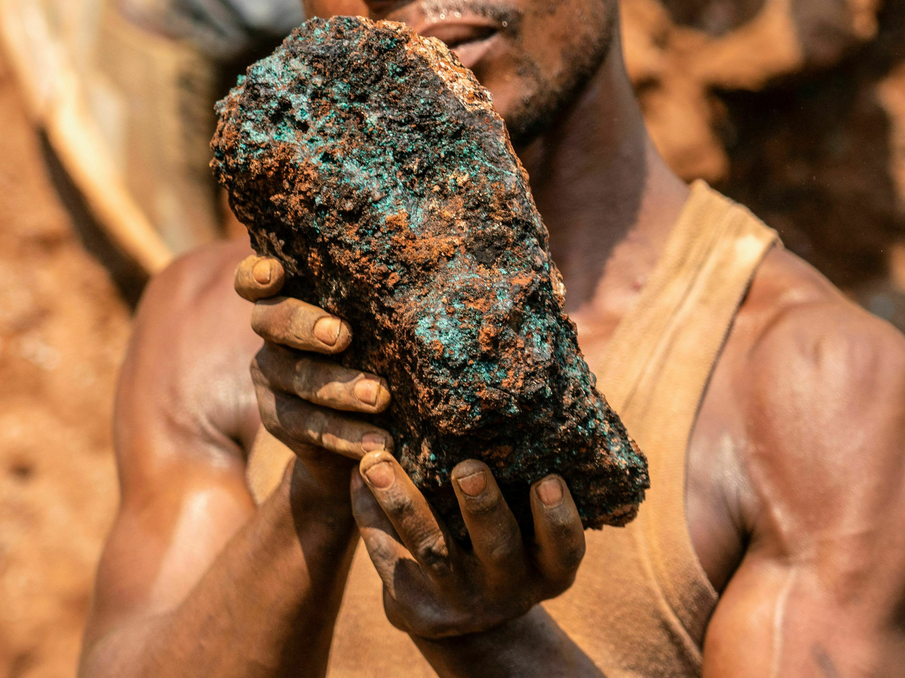
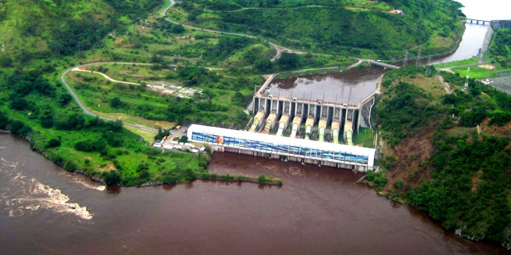
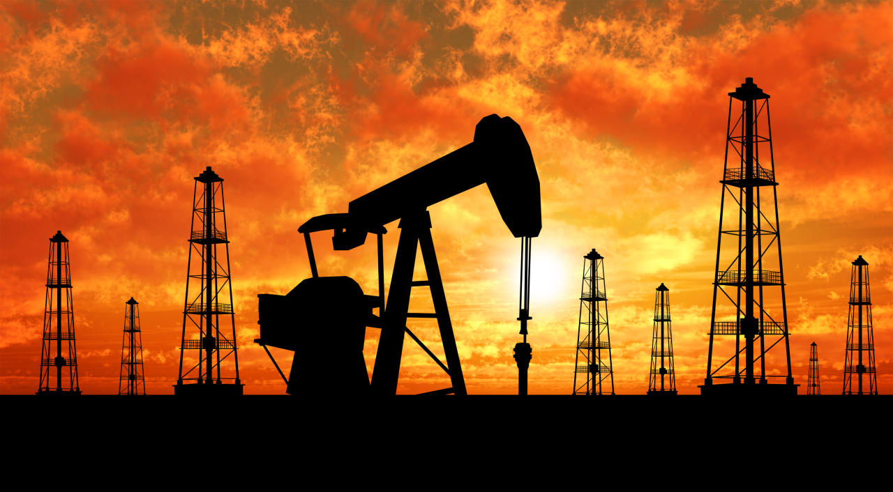
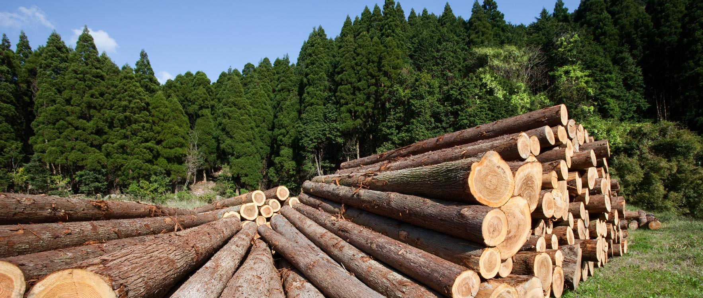
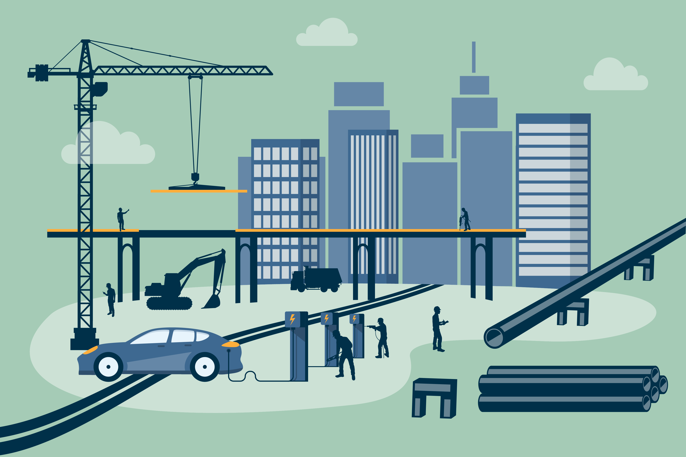
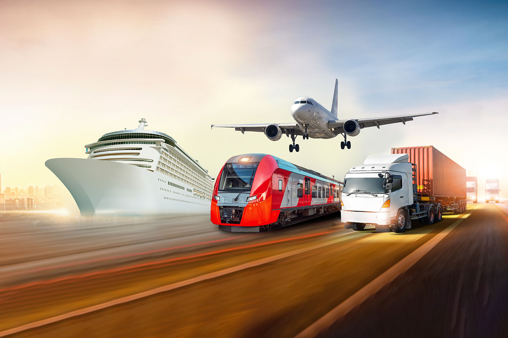

Invest In The DR CONGO
The Democratic Republic of the Congo boasts some of the most abundant natural resources on the planet. With a strong economy, rich farmland and bountiful mineral wealth, the DRC is progressively building towards a brighter future. The DRC’s investment agency namely the National Agency for Investment Promotion (ANAPI) provides investment facilitation services for initial investments over $200,000 and is mandated to simplify the investment process, make procedures more transparent, assist foreign investors and improve the image of the DRC as an investment destination.
-

Invest In Mining
The sector attracted several subsidiaries of large multinationals to operate in the DRC. The success story indicates the presence in DRC of companies such as: TENKE FUNGURUME MINING (FREE PORT McROAN, KOLWEZI COPPER COMPANY (KINROSS-EGMF) KIBALI GOLD MINING Mutanda, ASHANTI GOLDFIELD KILO, Twangiza MINING. Potentials in mineral wealth by province Mining representing 1,100 different minerals. All provinces have particular minerals. Vision Government of the DRC has to improve more governance and transparency in the mining sector management and the traceability of public revenues; For this purpose, it will (1) evaluate, revise and popularize the Act No. 007/2002 of 11 July 2002 of the Mining Code, (2) set up a national geological department and(3) evaluated the titles already granted in order to improve the mining cadastral file.
Investment Opportunities
Setting up of processing units of the transformation of mining products; Setting up of diamond hewing, gold refinery and of smelting ores of tin accompanying; Existence of geological research zones «ZRG» for exploration works and development of deposits and convincing indices of cassiterites, wolfram, coltan, gold, diamond, copper; Installation of cable manufacturing industries. Prospecting is open to investors through a certificate issued by the Mining Registry. It does not allow mining and does not guarantee future collection of prospected areas.
-

Invest In Energy
The DRC immense energy potential consists of non-renewable resources such as oil, natural gas and uranium, and renewable energy sources including hydroelectric, biomass, solar, wind, and geothermal power. The government’s vision is to increase the level of service up to 32% in 2030. The Congo River, which is the second largest river in the world with its basin astride the Equator provides an energy potential estimated at 100,000 MW spread across 780 sites in 145 territories and 76 000 villages. This potential represents approximately 37% of the African overall potential and about 6% of the global potential. Of the total installed capacity in DRC estimated at 2,516 MW, Societe Nationale d’Electricite (SNEL) has a generation capacity of about 2,416 MW or 96% of Hydroelectric power which accounts of domestic power generation and is generated by the Inga I and Inga II dams that are located in Kongo Central province. Current production is only 6,000 to 7,000 Gwh.
Investment Opportunities
Construction of hydroelectric dams; Construction of 4 Pan African energy; Construction of hydroelectric plants Wanie of Rukula (688 MW) of Sombwe (186 MW) of Kalengwe (204 MW) and Kamimbi / FUTA (53 MW); Rehabilitation and modernization of G16 and G13 groups of INGA I and G24 Inga II; Construction of Inga III low head (4800 MW); Construction of Inga III high head (3000MW); 217 hydroelectric sites identified for construction of hydroelectric power plants; Production Potential estimated at 44000MW; Transportation, Distribution and Marketing potentials.
-

Invest In Hydrocarbon
Oil and gas discoveries in the east of the country give the DRC the second largest crude oil reserves in Central and Southern Africa. These reserves are primarily located in the four major lakes bordering Tanzania, Burundi, Rwanda, and Uganda. The DRC has proven reserves of 180 million barrels, though estimates of total petroleum reserves exceed 5 billion barrels. Currently, Congolese oil production is limited to the Coast Basin, yielding 25,000 barrels per day of offshore production, all of which are exported. Along with large recently identified oil fields, the DRC may hold as many as 30 billion cubic meters of methane and natural gas in the three major petroleum deposits. Lake Kivu, bordering Rwanda and Burundi, has nearly 60 billion cubic meters of dissolved methane in its waters. Beyond the estimated 60 billion cubic meters of methane in Lake Kivu, the lake generates as much as 250,000 cubic meters of methane annually. The DRC contains three sedimentary basins: The Coastal Basin located in Kongo Central and extends offshore to the Congo River estuary, The Central Basin, and The Grabens Albertine and Tanganyika, which extends from the Ugandan-DRC border to the southern tip of Lake Tanganyika on the Zambian-DRC border.
Investment Opportunities
Certification of oil and gas reserves; Prospection and exploration of sedimentary basins; Exploitation of Lake Kivu methane gas; Construction of a pipeline crossing the basin; Construction of storage facilities; Construction of a refinery; Production of road bitumen in Kongo Central Province; Storage, transportation and Pipelines.
-

BANKING & FINANCE
Banking, assurances and microfinance sectors objectives are the creation of specialized financial institutions and operational efficiency of existing banks. The DRC’s banking system is comprised of the BCC and 18 commercial banks as well as savings/credit cooperatives, microfinance institutions, financial transfer services, and one development bank, SOFIDE. A postal checking system and several credit cooperatives exist and the Citibank-DRC, a wholly-owned subsidiary of Citigroup, is the only U.S. bank in the DRC.
Potentials
A market of around 90 million people; 18 commercial banks, 1 saving bank; 3 specialized financial institutions; 3 institutions of electronic money; 2 saving and credit cooperatives; 23 micro-finance institutions; 55 Messengers and 15 currency exchange offices; Sectors fully open to competition.Investment Opportunities
Creation of business specialized banks: development bank, settlement bank, farming bank, etc Creation of a structured financial market; Creation of micro-finance institutions in the countryside, where live more than 70% of the population who are excluded from the formal banking system; Setting up leasing company; Creation of insurance companies, reinsurance, health insurance and intermediary in private insurance.
-

Invest In Agriculture
The DRC has more available farmland than any other country in Africa, with an agricultural potential to feed close to two billion people. DR Congo has and estimated 80 million hectares of available arable land with 10% of this land is currently being used. The agricultural sector contributes 18 percent of GDP and accounts for over 60 percent of new jobs. Approximately 1.5 million square miles. The average rainfall is a little over 58 inches (147 centimeters) per year. The second largest rainforest after the Amazon, which is the largest rainforest in the world. DRC Prime crops: Cassava, plantains, maize, groundnuts/peanuts tobacco, coffee, sugar cane, cocoa and rice. Rubber is also extracted from rubber trees and palm oil from the kernels of palm trees. Soil is ferrasols, sandy clay soils with clay tasks, sandy soils, recent volcanic soils, alluvial plain soils, ancient rocks soil, areno-ferrals, hydro-kaolisols, and more. The dry season lasts for less than four months, except in the most southern region. A monthly average temperature of 23 to 27 degrees applies to 90 percent of the country.
Leading Sub-Sectors
Crop planting Cultivation Fishery, land and wildlife conservation Fertilizer, herbicides, pesticides, and fungicides Farm equipment leasing and financing Agricultural industrial park
-

Invest In Forestry
The Congo basin is estimated to include 530 million hectares of land and 200-300 million in forest/woodland with an area that is approximately 1,232,000 m2, more than 45% of the African equatorial forest and 6% of the world tropical reserves. Congolese forest contains more or less 1,000 species of trees. The uniqueness of the Congo is its 11,000 different species of plants often referred as medicinal along with rainforest vegetation that has most dense parts receiving only 1% of the sunlight reaching the ground. DRC investment projects is to plant 3 million hectares (ha) of forest up to 2025.
Unique to the DRC
Lianas, which look a lot like vines that grow up to three thousand feet long (914 meters). Teak trees are common in the rainforest of the Congo and grow up to 50 meters (154 feet) high.Potentials
Production potential: 10,000.000 m3 of wood per year. Forest area: 150 million ha. Forest conceded area: 11 million ha.Investment Opportunities
Investment in agro forestry; Development of production industries for paper pasta; Industrial transformation of wood: sawing, cutting, plywood, beam and rafters; Production of wooden poles for electric lines; Production and transportation of logs; 16 plots of land available returned by their former owners to the government after the conversion process.
-

Invest In Infrastructure
There are numerous infrastructure construction opportunities for American firms with most of the projects structured as public-private partnerships. In March 2016, Ministry of Infrastructure and Public Works identified over $6 billion in transportation and utilities related infrastructure construction and rehabilitation projects over the next six years. The Government objectives are to modernize railroad infrastructures and the airport equipment of safety and security in addition to maintaining, laying out and tagging the waterways in the country.
Potentials
A road network of 145.000 km, with only 3 000 km covered roads; A 5 033 km railroad network to rehabilitate completely; A maritime, river and Lake network of 16 238 km to tag, dredge and exploit; 270 airport Platforms to reconstruct; 2 maritime international ports to modernize; Several ports in the country need to be equipped and dredged; The interconnection roads of economic pools.Investment Opportunities
Construction of a deep-water port at Banana. Construction of railroads, including the Banana-Matadi-Kinshasa- Ilebo railway; Modernization of SNCC and SCTP railroads; The modernization and equipment of the maritime ports of Matadi and Boma; Modernization of SCTP ports in the country.
-

Housing Investment
The vision of the government is (1) the reorganization of the housing sector (institutional reform and capacity building); (2) improvement of the housing (land development policy and of supervision of real estate); and (3) fund raise for housing to eliminate the housing shortage especially in the urban poverty areas. In the past five years, there has been a slight increase in housing supply and private housing development. In 2011, for example, the central government launched a housing project named Cité Kin Oasis, which accommodated the completion of 1 000 social houses in Kinshasa/Bandalungwa. Most of housing development projects in the country are located in the capital city of Kinshasa, including Cité du Fleuve, Cité de l’Espoir, Cité Belle Vie, Cité Moderne, and Fungurume, a mining district of the newly created province of Lualaba.
Investment Opportunities
The overall deficit in housing is estimated at 3,945,555 which means 263,039 houses need to be built per year. The needs of the city of Kinshasa are estimated at 54.4% of the overall deficit, that is, 143,092 houses to be built per year. DRC has 12 largest cities growing by approximately 4.7 percent a year and the urbanization process has increased from 9.9 percent in 1956 to over 42 percent in 2015, which reflects a relative surge in construction and housing supply.
-

Transportation Investment
Opportunities to invest are justified from countless transportation in the country and in different networks are immense, as the Government has made certain achievements. Prospect – Develop a new public transport policy joining efficiency / profitability and social and setting up incentives to attract private investment in the sector, particularly in mass transport systems such as urban train, tramway and urban river transport; – Improve the state of urban roads to reduce the cost of depreciation of vehicles and fluidity traffic; – Increase the automotive cartage of public transport portfolio companies; – Encourage private operators to invest in the sector through public-private partnerships, particularly in mass transport systems; – Strengthen the capacity in rolling stock and spare parts of public carriers with around 1,500 buses in 5 years, at a rate of 300 buses per year; – Create a national fund to promote public transport, funded by the toll roads and some public car parks in major cities; – Rehabilitate and modernize the SCTP urban train; – Establish urban river transport system of the SCTP to ease surface transport; – Extend the railway Kin-Matadi until Banana for the implementation of the deep-water port, etc.